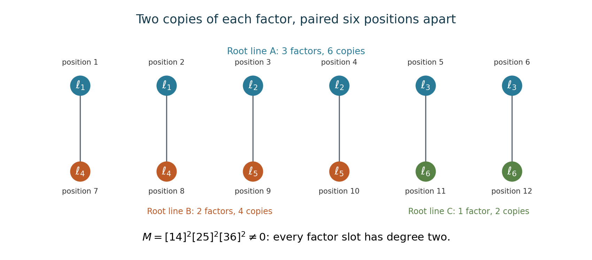

Forms in several variables and Hilbert finiteness
Written by GPT-6.1 Sol (OpenAI) in Codex at Ultra, October 2026. Original exposition and proofs are CC0. This evolving lesson is being checked by its writing AI; no independent review is recorded.
A finite list of explicit covariants answers one computational problem. Hilbert's argument answers a different question: why must some finite list exist for every polynomial representation of the special linear group? Its essential step is a projection that turns coefficients in an ideal expression into invariant coefficients. We then determine the entire invariant ring of a ternary cubic by restricting to the Hesse pencil, before turning to nullcones and determinant operators.
We work over \(\mathbb C\). A polynomial representation of \(G=\operatorname{SL}_n(\mathbb C)\) is a homomorphism \(G\to\operatorname{GL}(W)\) whose matrix entries are regular functions of the matrix entries of \(g\); on \(G\), inverse entries are polynomial as well, since \(g^{-1}=\operatorname{adj}(g)\). Put \(A=\mathbb C[W]\), with action \((gF)(w)=F(g^{-1}w)\). Each degree \(A_d\) is a finite-dimensional polynomial representation.
We use normalized Haar measure from Haar measure on locally compact groups, Theorems 8.3 and 9.2, the Hilbert basis theorem from Noetherian and Artinian rings, Theorem 2.1, and the Nullstellensatz from The Nullstellensatz and Jacobson rings. These are existing prerequisite lessons with their own proofs. From the first lesson of this course we need the action conventions and covariance of alternating contractions; we do not assume its finite-generation conclusion.
1. Determinants and mixed variables
For vector columns \(v_1,\ldots,v_m\in\mathbb C^n\), write \[ [i_1\cdots i_n]=\det(v_{i_1},\ldots,v_{i_n}). \] Multiplication of the matrix by \(g\) multiplies every bracket by \(\det g\), so these are special-linear invariants. The first fundamental theorem, proved in Polarization and invariants of many vectors, says they generate the invariant ring on any number of vectors.
For a dual vector \(\alpha\), the pairing \(\alpha(v)\) is invariant under \(v\mapsto gv,\ \alpha\mapsto\alpha g^{-1}\). Determinants of \(n\) dual rows instead scale by \(\det(g)^{-1}\). In symbolic notation, the letters of a form are dual rows and its ordinary variables are vector columns. Auxiliary dual variables describe contravariants. Polynomials depending on several sorts of auxiliary variables are called concomitants. These transformation rules keep the variable sorts distinct.
For exactly \(n\) vector columns, bracket generation has a short direct proof. If \(F\) is invariant, define \(h(t)=F(\operatorname{diag}(t,1,\ldots,1))\). On invertible matrices, two matrices have the same determinant exactly when one is obtained from the other by left multiplication by a special-linear matrix. Thus \(F(X)=h(\det X)\) there. Since \(h\) is polynomial and invertible matrices form a dense open set, the equality holds for all \(X\). Consequently \[ \mathbb C[\operatorname{Mat}_n]^{\operatorname{SL}_n}=\mathbb C[\det X]. \tag{1} \] For \(n=2\) this proves the invariant ring of a pair of vectors is \(\mathbb C[[12]]\).
2. Compact averaging and the unitary trick
Theorem 2.1 (compact complete reducibility). Every finite-dimensional continuous complex representation of a compact group \(K\) has an invariant positive-definite Hermitian inner product. Every invariant subspace has an invariant complement.
Proof. Start with any positive-definite Hermitian form \(\langle\ ,\ \rangle_0\), and normalized Haar measure \(\mu\). On a compact group this measure is also right invariant: the right translate of a left Haar measure is left Haar, has the same total mass, and hence equals it by uniqueness. Define \[ \langle v,w\rangle_K=\int_K \langle kv,kw\rangle_0\,d\mu(k). \] It is Hermitian and invariant, by right translation in the integral. For \(v\ne0\), the continuous positive function \(\langle kv,kv\rangle_0\) has a positive minimum on \(K\); its integral is positive. If \(U\) is invariant, unitarity makes its orthogonal complement invariant: for \(v\perp U\) and \(u\in U\), \(\langle kv,u\rangle_K=\langle v,k^{-1}u\rangle_K=0\). Splitting successively proves complete reducibility. \(\square\)
For \(G=\operatorname{SL}_n(\mathbb C)\), take \[ K=\operatorname{SU}(n)=\{g:g^*g=I,\ \det g=1\}. \] It is closed and bounded in a finite-dimensional real vector space, hence compact.
Lemma 2.2 (density of the unitary subgroup). A regular function on \(G\) that vanishes on \(K\) is zero. The same holds for a holomorphic function.
Proof. The real Lie algebra \(\mathfrak k=\{X:X^*=-X,\ \operatorname{tr}X=0\}\) has complex span \(\mathfrak{sl}_n(\mathbb C)\). Indeed every trace-zero matrix is the sum of a skew-Hermitian trace-zero matrix and \(i\) times another one, by separating its Hermitian and skew-Hermitian parts. Choose a real basis \(X_1,\ldots,X_{n^2-1}\) of \(\mathfrak k\); it is a complex basis of that complex span.
The holomorphic map \[ \Phi(z_1,\ldots,z_{n^2-1}) =\exp(z_1X_1)\cdots\exp(z_{n^2-1}X_{n^2-1}) \] has invertible derivative at zero, so the complex inverse-function theorem gives a complex open neighbourhood of the identity in its image. For real \(z_j\), its image lies in \(K\). If \(P\) vanishes on \(K\), \(P\circ\Phi\) vanishes on a real open box. Applying the one-variable identity theorem to one coordinate at a time makes it zero on a complex neighbourhood of zero. Hence \(P\) vanishes on a complex open neighbourhood in \(G\).
The group \(G\) is connected: elementary row operations express its matrices as products of elementary unipotent matrices and determinant-one diagonal matrices; the latter are products of diagonal \(2\times2\) blocks, themselves products of elementary matrices by the explicit calculation in the first lesson. Each elementary subgroup is the image of the connected plane \(\mathbb C\), and products give paths to the identity. Holomorphic continuation on this connected complex manifold now proves \(P=0\). The case \(n=1\) is immediate. \(\square\)
Theorem 2.3 (the unitary trick). Every finite-dimensional polynomial representation of \(G\) is completely reducible.
Proof. First, a \(K\)-invariant subspace \(U\) is \(G\)-invariant. For \(u\in U\) and a linear functional \(\ell\) vanishing on \(U\), the regular function \(g\mapsto\ell(gu)\) vanishes on \(K\), and hence on \(G\) by Lemma 2.2. Therefore \(gu\in U\).
Given a \(G\)-invariant subspace, Theorem 2.1 supplies a \(K\)-invariant complement; the preceding argument makes that complement \(G\)-invariant. Repeating in finite dimension gives a direct sum of irreducibles. \(\square\)
The passage from \(K\) to \(G\) uses holomorphic matrix coefficients. It does not apply to an arbitrary continuous representation of the underlying real group \(G\).
3. The Reynolds projection
Let \(B=A^G\). Degree by degree, define \[ \rho(F)=\int_K kF\,d\mu(k). \tag{2} \] The integral is just integration of the finitely many coordinates in \(A_d\), not integration over an infinite-dimensional space.
Theorem 3.1 (Reynolds). The map \(\rho:A\to B\) is the unique degree-preserving, \(G\)-equivariant projection onto \(B\). It satisfies \[ \rho(bF)=b\rho(F)\quad(b\in B),\qquad \rho(b)=b. \tag{3} \]
Proof. Translation in (2) makes its image \(K\)-fixed, hence \(G\)-fixed by density. Averaging a fixed vector gives that vector, so it is a projection. It preserves degrees. Left and right invariance of Haar measure make it commute with \(K\), and density makes this commutation hold with \(G\) on every finite-dimensional degree piece. Pulling the \(K\)-fixed factor \(b\) out of the integral proves (3).
For uniqueness, use Theorem 2.3 on each \(A_d\). Any equivariant map to the trivial representation kills every nontrivial irreducible: a nonzero map from an irreducible to a trivial representation would be injective, forcing that irreducible to be trivial. On the sum of trivial summands a projection onto \(B_d\) is the identity. These two conditions determine it uniquely. \(\square\)
Thus a Reynolds projection is more than a linear choice of a complement. Its invariant-linearity is what permits the next degree induction.
4. Hilbert finiteness and normality
Theorem 4.1 (Hilbert finiteness). For every finite-dimensional polynomial representation \(W\) of \(\operatorname{SL}_n(\mathbb C)\), the invariant ring \(B=\mathbb C[W]^G\) is generated by finitely many homogeneous invariants.
Proof. Let \(I=A\,B_+\) be the ideal generated by all positive-degree homogeneous invariants. The polynomial ring \(A\) is Noetherian by the Hilbert basis theorem. Hence \(I\) has finitely many ideal generators. Each is a finite \(A\)-linear combination of elements of \(B_+\), so collecting the finitely many invariants occurring in those expressions gives homogeneous invariants \(f_1,\ldots,f_s\) generating \(I\).
If \(f\in B\) is homogeneous of positive degree \(d\), write \(f=\sum_i a_if_i\). Taking degree \(d\) components lets us choose \(a_i\) homogeneous of degree \(d-\deg f_i\), omitting a term when this number is negative. Apply (3): \[ f=\rho(f)=\sum_i\rho(a_i)f_i. \] Every nonzero \(\rho(a_i)\) has degree strictly less than \(d\). Induction on \(d\), starting with \(B_0=\mathbb C\), expresses \(f\) as a polynomial in the \(f_i\). Every invariant is a sum of homogeneous invariants, because the action preserves degree. Thus \(B=\mathbb C[f_1,\ldots,f_s]\). \(\square\)
This proof establishes existence; the basis theorem does not supply a numerical bound on the degrees of the chosen \(f_i\).
Corollary 4.2 (normality). \(B\) is a Noetherian normal domain.
Proof. It is a finite-type algebra over a field, hence Noetherian, and a subring of the domain \(A\). If \(z\in\operatorname{Frac}B\) is integral over \(B\), the same monic equation makes it integral over \(A\). Polynomial rings are normal, by Integral extensions, lying over, going up and going down, Proposition 2.3, so \(z\in A\). Since it is a fraction of invariant elements, \(z\) is fixed by \(G\). Hence \(z\in B\). \(\square\)
For example, the quadratic calculation in the first lesson gives \(\mathbb C[\operatorname{Sym}^2(\mathbb C^2)^*]^{\operatorname{SL}_2} =\mathbb C[ac-b^2]\). Applying Theorem 4.1 to coefficient variables together with auxiliary vector or dual-vector variables proves finite generation for their covariant and concomitant algebras as well.
The complete invariant ring of a ternary cubic
Hilbert's theorem supplies finiteness without choosing generators. For a ternary cubic, two explicit contractions suffice. The completeness proof below uses a two-dimensional family and a finite group acting on it. The finite-group counting formula is Theorem 4.1 of Invariants of finite groups and Noether's degree bound; its proof uses finite averaging and is independent of this cubic example.
Write a general cubic with multinomial coefficients: \[ f(x,y,z)=\sum_{i+j+k=3}\frac{3!}{i!j!k!}c_{ijk}x^iy^jz^k. \] For four independent symbolic rows \(u,v,w,r\), let \(U_f\) replace a degree-three monomial in each row by the corresponding coefficient \(c_{ijk}\). Define \[ S(f)=U_f\bigl([uvw][uvr][uwr][vwr]\bigr),\qquad H_f=\det\left(\frac{\partial^2f}{\partial x_i\partial x_j}\right), \qquad T(f)=\left.\frac{d}{ds}S(f+sH_f)\right|_{s=0}. \tag{A1} \] Every symbolic row in the bracket product occurs three times, so its evaluation is defined. Equivariance of the umbral map makes \(S\) special-linear invariant and homogeneous of coefficient degree four. The chain rule gives \(H_{f\circ h}=\det(h)^2H_f\circ h\). Thus the cubic \(H_f\), whose coefficients have degree three in those of \(f\), is a special-linear covariant. Applying invariance of \(S\) to \(f+sH_f\) shows that \(T\) is invariant, of coefficient degree six. These are fixed normalizations of the Aronhold invariants; multiplying either by a nonzero constant changes neither its zero set nor the algebra it generates.
Consider the Hesse pencil of forms, here including its scalar parameter: \[ f_{a,b}=aF+bQ,\qquad F=x^3+y^3+z^3,\quad Q=xyz. \tag{A2} \] The two parameters \(a,b\) range independently over \(\mathbb C\).
Lemma 4.3 (restriction to the pencil is injective). A polynomial invariant of ternary cubics is determined by its values on (A2).
Proof. Consider the holomorphic map \[ \operatorname{SL}_3(\mathbb C)\times\mathbb C^2 \longrightarrow \operatorname{Sym}^3(\mathbb C^3)^*, \qquad (h,a,b)\longmapsto f_{a,b}\circ h. \] At \((I,1,0)\), its six off-diagonal matrix directions give the six distinct monomials \(3x_i^2x_j\), \(i\ne j\). Two trace-zero diagonal directions give \(3(x^3-z^3),3(y^3-z^3)\). The pencil directions give \(F,Q\). These ten cubics are independent: the mixed monomials and \(Q\) are distinct, while the two differences and the sum \(F\) span the pure cubes. The derivative therefore has rank ten. The complex inverse-function theorem puts a nonempty complex open set in the image. If an invariant vanishes on the pencil, it vanishes on this image by invariance, hence on that open set. A polynomial vanishing on a complex open set is identically zero. \(\square\)
This argument needs no classification of singular cubics, and makes no claim that every cubic has a Hesse presentation. Density is enough to determine a polynomial.
We next identify enough symmetries of the pencil to count its possible invariant polynomials. Fix a primitive cube root \(\zeta\), and put \[ d=3(\zeta^2-\zeta),\qquad d^2=-27, \qquad A=\begin{pmatrix}\zeta&0\\0&1\end{pmatrix},\qquad B=\frac1d\begin{pmatrix}3&1\\18&-3\end{pmatrix}. \tag{A3} \] These matrices act on the column \((a,b)^t\). Both actions arise from determinant-one substitutions on \((x,y,z)\). For \(A\), choose \(\rho^3=\zeta\) and substitute \(\rho\operatorname{diag}(\zeta^{-1},1,1)(x,y,z)^t\). Its determinant is one, and it sends \(aF+bQ\) to \(\zeta aF+bQ\).
For \(B\), let \[ M=\begin{pmatrix} 1&1&1\\1&\zeta&\zeta^2\\1&\zeta^2&\zeta \end{pmatrix}. \] Its determinant is \(d\). Direct multiplication gives \[ F(Mx)=3F(x)+18Q(x),\qquad Q(Mx)=F(x)-3Q(x). \] Choose \(\sigma^3=d^{-1}\). Substitution by \(\sigma M\) has determinant one and induces exactly \(B\). Consequently, restriction of an invariant of ternary cubics is invariant under the group \(\Gamma=\langle A,B\rangle\).
Lemma 4.4 (the finite pencil group). The group \(\Gamma\) has 24 elements, and \[ \sum_{m\geq0}\dim\bigl(\mathbb C[a,b]^\Gamma_m\bigr)t^m =\frac1{(1-t^4)(1-t^6)}. \tag{A4} \]
Proof. Put \(C=ABA^{-1}\) and \(D=A^2BA^{-2}\). Multiplying the displayed two-by-two matrices, using \(1+\zeta+\zeta^2=0\), gives \[ A^3=I,\qquad B^2=C^2=D^2=-I,\qquad BC=D=-CB, \] and conjugation by \(A\) cycles \(B,C,D\). In particular \(\{I,-I,\pm B,\pm C,\pm D\}\) is a quaternion subgroup of eight distinct matrices. The three cosets obtained by multiplying it by \(I,A,A^2\) form a group containing both generators. They are distinct because their determinants are respectively \(1,\zeta,\zeta^2\). This proves the order 24 and gives every element without an appeal to a group classification.
The same multiplication gives this entire trace and determinant list:
| Number of matrices | Trace | Determinant |
|---|---|---|
| 1 | \(2\) | \(1\) |
| 1 | \(-2\) | \(1\) |
| 6 | \(0\) | \(1\) |
| 4 | \(1+\zeta\) | \(\zeta\) |
| 4 | \(-1-\zeta\) | \(\zeta\) |
| 4 | \(\zeta\) | \(\zeta^2\) |
| 4 | \(-\zeta\) | \(\zeta^2\) |
For a two-by-two matrix the Molien denominator is \(1-\operatorname{tr}(g)t+\det(g)t^2\). Averaging over \(g\) or \(g^{-1}\) gives the same sum, so the convention for the induced function action does not change it. Pairing the last four rows and using \(\zeta+\zeta^2=-1\) gives \[ \frac1{24}\left( \frac1{(1-t)^2}+\frac1{(1+t)^2}+\frac6{1+t^2} +\frac{4(2+t)}{(1-t)(1+t+t^2)} +\frac{4(2-t)}{(1+t)(1-t+t^2)}\right). \] Multiplication by \((1-t^4)(1-t^6)\) reduces the parenthesis to 24; this is (A4). Molien's formula is an identity of formal power series, so this calculation determines every degree. \(\square\)
The restrictions of our two global invariants can now be calculated. Their normalizations are \[ \begin{split} S(f_{a,b})&=\frac{b^4-216a^3b}{54},\\ T(f_{a,b})&=\frac4{27} \bigl(b^6+540a^3b^3-5832a^6\bigr). \end{split} \tag{A5} \] Here is a small way to check all constants. Invariance under \(A\) and degree four leave only \(a^3b,b^4\) in the first restriction. In the product of four determinants in (A1), the coefficient of the monomial using each of the three coordinates of each row once is 24. The coefficient using a pure cube in each of three rows and the product of coordinates in the remaining row, summed over the row choices, is \(-24\). Since \(c_{111}=b/6\) and \(c_{300}=c_{030}=c_{003}=a\) on the pencil, these give \(24(b/6)^4-24a^3(b/6)\), the first formula. Both coefficients follow by expanding the determinants as signed sums of their six permutations; the symbolic construction specifies the calculation completely.
For the second formula, the Hessian matrix has diagonal entries \(6ax,6ay,6az\) and off-diagonal entries \(bz,by,bx\). Its determinant is \[ H_{f_{a,b}}=-6ab^2F+(216a^3+2b^3)Q. \] Differentiate the first formula in the parameter direction \((-6ab^2,216a^3+2b^3)\). This gives exactly the second formula of (A5). Finally their parameter Jacobian is \[ \det\frac{\partial(S(f_{a,b}),T(f_{a,b}))}{\partial(a,b)} =-\frac{256}{9}a^2(b^3+27a^3)^2, \tag{A6} \] which is nonzero as a polynomial. Thus these two restrictions are algebraically independent. For completeness, in characteristic zero a polynomial relation of least positive degree would, on differentiation and inversion of this nonzero Jacobian over \(\mathbb C(a,b)\), give two relations of smaller degree. Its two partial derivatives must therefore be zero polynomials, making it constant, a contradiction.
Theorem 4.5 (Aronhold's generators). The invariant ring of a ternary cubic is \[ \mathbb C[\operatorname{Sym}^3(\mathbb C^3)^*]^{\operatorname{SL}_3} =\mathbb C[S,T],\qquad \deg S=4,\quad\deg T=6. \tag{A7} \] There is no algebraic relation between the two generators.
Proof. Algebraic independence makes the subalgebra of \(\mathbb C[a,b]^\Gamma\) generated by the two restrictions a polynomial algebra, with series \(1/((1-t^4)(1-t^6))\). Lemma 4.4 gives exactly that series for the whole invariant ring of the pencil. The inclusion is graded, and each degree is finite-dimensional. Equality of its dimensions in every degree therefore proves equality of the two algebras.
Now let \(P\) be any invariant of ternary cubics. Its restriction is a \(\Gamma\)-invariant, hence a polynomial \(q(S(f_{a,b}),T(f_{a,b}))\). Both \(P\) and \(q(S,T)\) are global invariants with the same restriction. Lemma 4.3 makes them equal. Independence of the restrictions also rules out a global relation. \(\square\)
In particular, \(S(F)=0,T(F)=-864\), whereas \(S(xyz)=1/54,T(xyz)=4/27\). A cubic with zero Hessian need not be recognized by a smooth normal form; the polynomial theorem applies to all coefficient values, including singular and zero cubics. Its nullcone is exactly \(V(S,T)\).
The construction and completeness statement are due to Aronhold. The Hesse pencil and its finite symmetry group belong to the classical geometry surveyed by Artebani and Dolgachev in The Hesse pencil of plane cubic curves. The proof here gives the explicit substitutions, finite group, generating invariants and all-degree dimension comparison, rather than requiring their proofs as an external input.
The same theorem holds over any field of characteristic zero. Indeed the constructions have rational coefficients. In a fixed coefficient degree, invariance is the common kernel of the six rational matrices induced by \(x_j\partial/\partial x_i\), \(i\ne j\). Annihilation implies invariance under their unipotent subgroups by their finite exponential series, and these subgroups generate the special linear group by elementary matrix operations. Taking a kernel of these finite matrices commutes with extension of the ground field. The monomials \(S^iT^j\) form a basis of the kernel over \(\mathbb C\) by (A7); rational linear independence and rank then make them a basis over every characteristic-zero field. This descent does not assume that the entire field embeds into \(\mathbb C\).
5. Equations for the nullcone give module finiteness
Define the nullcone \[ \mathcal N=\{w\in W:b(w)=0\text{ for every }b\in B_+\}. \] Theorem 4.1 makes this an algebraic set defined by finitely many equations.
Theorem 5.1 (Hilbert's nullcone finiteness theorem). Suppose homogeneous positive-degree invariants \(q_1,\ldots,q_r\) have common zero set \(\mathcal N\) in \(W\). Then \(B\) is a finite module over \(\mathbb C[q_1,\ldots,q_r]\).
Proof. Choose homogeneous algebra generators \(b_1,\ldots,b_s\) for \(B\). Each \(b_i\) vanishes on the common zero set of the \(q_j\). The Nullstellensatz gives an integer \(N_i>0\) and an expression \[ b_i^{N_i}=\sum_j a_{ij}q_j\quad(a_{ij}\in A). \] Applying \(\rho\) makes the coefficients invariant, so \(b_i^{N_i}\in(q_1,\ldots,q_r)B\). Thus \(B/(q_1,\ldots,q_r)B\) is spanned by the finitely many monomials \(\prod_i b_i^{e_i}\), \(0\leq e_i<N_i\). Choose homogeneous lifts \(u_1,\ldots,u_t\) of a homogeneous vector-space basis of that quotient.
For a homogeneous \(b\in B_d\), subtract a complex linear combination of the \(u_i\) of degree \(d\) to obtain an element of \((q_1,\ldots,q_r)B\). Write that remainder as \(\sum_jq_jc_j\), choosing \(c_j\) of degree \(d-\deg q_j<d\). Induction on degree expresses every \(c_j\), and hence \(b\), in the \(\mathbb C[q_1,\ldots,q_r]\)-module generated by the \(u_i\). This proves module finiteness. \(\square\)
This is stronger than the assertion that some finite generating set exists: any homogeneous invariant equations cutting out the nullcone give an integral, finite subalgebra. It does not assert that the \(q_j\) are algebraically independent.
6. The nullcone of binary forms
For a binary \(d\)-ic, the root formulation has a complete elementary proof. We need first a fact about symmetric root expressions.
Lemma 6.1 (descending a root expression). Let \[ f(x,y)=\prod_{\nu=1}^d(u_\nu x+v_\nu y) =\sum_{r=0}^d c_rx^{d-r}y^r. \] A polynomial in the \(u_\nu,v_\nu\) that is symmetric in the \(d\) pairs and homogeneous of degree \(q\) in each pair is a unique polynomial, homogeneous of degree \(q\), in \(c_0,\ldots,c_d\). This assertion and its proof hold with coefficients in any commutative ring, including \(\mathbb Z\).
Proof. Set all \(u_\nu=1\). The resulting polynomial \(P(v_1,\ldots,v_d)\) is symmetric and has degree at most \(q\) in each \(v_\nu\). Use the usual leading-monomial proof of the fundamental theorem of symmetric polynomials, with lexicographic order \(v_1>\cdots>v_d\). A leading monomial has exponents \(\alpha_1\geq\cdots\geq\alpha_d\), since exchanging a larger later exponent with an earlier smaller one would give a larger monomial. Subtract its coefficient times \[ e_1^{\alpha_1-\alpha_2}e_2^{\alpha_2-\alpha_3} \cdots e_d^{\alpha_d}. \] This product has the chosen leading monomial with coefficient one. It uses \(\alpha_1\leq q\) elementary-symmetric factors, and has degree at most \(q\) in each variable. The subtraction therefore stays within the finite set of possible monomials of individual degree at most \(q\), and strictly lowers the leading monomial. It terminates without division by any integer or coefficient.
For \(u_\nu\ne0\), put \(z_\nu=v_\nu/u_\nu\). Homogeneity gives the original polynomial as \((\prod u_\nu)^qP(z_1,\ldots,z_d)\). Here \(c_0=\prod u_\nu\) and \(c_r=c_0e_r(z)\). A term using \(h\leq q\) elementary-symmetric factors becomes their corresponding product of \(c_r\)'s times \(c_0^{q-h}\). This is a homogeneous coefficient polynomial of degree \(q\). The equality in the localization where the \(u_\nu\) are inverted is a polynomial equality before localization: multiplication by a monomial in polynomial variables is injective over any coefficient ring.
For uniqueness, distinct products of the elementary symmetric functions have distinct leading monomials, given by their successive cumulative exponents, and leading coefficient one. They are therefore linearly independent over any coefficient ring. A homogeneous relation of degree \(q\) in the \(c_r\)'s, evaluated at every \(u_\nu=1\), becomes a relation between these products in \(c_1=e_1,\ldots,c_d=e_d\); the power of \(c_0\) in each term was fixed by total degree. Every coefficient is zero. Different coefficient degrees give different degrees in each root pair, so the entire coefficient-to-root substitution is injective as well. \(\square\)
Theorem 6.2 (binary nullcone). A binary form belongs to the nullcone for \(\operatorname{SL}_2(\mathbb C)\) if and only if it has a root of multiplicity strictly greater than \(d/2\). The zero form belongs to the nullcone.
Proof. If a nonzero form has such a root, change coordinates so its repeated factor is \(x^m\), \(m>d/2\). Under inverse substitution by \(\operatorname{diag}(t^{-1},t)\), every monomial \(x^ry^{d-r}\) occurring in it scales by \(t^{2r-d}\), with \(r\geq m\). Thus the transformed coefficient vector tends to zero as \(t\to0\). Every homogeneous positive-degree invariant is constant along this transformation and continuous at zero, so its value on the form is zero.
Conversely, factor a nonzero form into \(d\) nonzero linear factors, and assume no root line occurs more than \(d/2\) times. Make two copies of each factor index, and arrange the \(2d\) copies so that indices with the same root line form consecutive blocks. Every block has length at most \(d\). Pair position \(r\) with position \(r+d\), for \(1\leq r\leq d\). Two paired positions cannot belong to the same block, so the bracket of their root covectors is nonzero.
The product \(M\) of these \(d\) brackets is therefore nonzero at this tuple of root covectors. Each original factor index occurs twice, so \(M\) has degree two in each root pair. Consider \[ \prod_{\sigma\in S_d}(T-\sigma M) =T^{d!}+\sum_{j=1}^{d!}Q_jT^{d!-j}. \tag{4} \] Each \(Q_j\) is symmetric in the root pairs, has degree \(2j\) in each pair, and is special-linear invariant, since every bracket is. Lemma 6.1 writes it as a coefficient polynomial \(I_j(f)\), homogeneous of positive degree \(2j\). That coefficient polynomial is invariant: the intertwining equality follows on every factored form, and every binary form factors over \(\mathbb C\), so it holds on every coefficient vector.
At least one \(Q_j\) is nonzero at the chosen tuple. Otherwise (4) would specialize to \(T^{d!}\), whose only root is zero, contradicting the nonzero root \(M\). Hence some positive-degree invariant \(I_j\) is nonzero at \(f\), and \(f\notin\mathcal N\). \(\square\)
For cubics the threshold is two: the nullcone is the double-root locus, equivalently \(\Delta=0\). For quartics it is three. In the first lesson the quartic invariant ring is \(\mathbb C[i,j]\), so the equations \(i=j=0\) cut out precisely the triple-root locus. A double-root quartic need not lie in the nullcone: \(x^2y^2\) has \(c=1/6\) and \(i=1/12\ne0\).
The strict inequality matters for every even degree. A form with two equally multiple roots is on the discriminant locus but has a nonzero invariant.

This is the matching step of Theorem 6.2 for \(d=6\) and three distinct root lines \(A,B,C\) of multiplicities \(3,2,1\). Each factor slot occurs twice; every paired bracket joins different root lines. The depicted nonzero product still needs the symmetric-polynomial step (4) to become a coefficient invariant. Editable diagram.
7. Cayley's determinant differential operator
Let \(X=(x_{ij})\), \(\Delta_X=\det X\), and \[ \Omega_X=\det(\partial_{x_{ij}}) =\sum_{\sigma\in S_n}\operatorname{sgn}(\sigma) \prod_{i=1}^n\partial_{x_{i,\sigma(i)}}. \]
Theorem 7.1 (Cayley's identity). For every positive integer \(s\), \[ \Omega_X\Delta_X^s =s(s+1)\cdots(s+n-1)\Delta_X^{s-1}. \tag{5} \]
Proof. The chain rule for left and right matrix multiplication shows that \(\Omega_X\Delta_X^s\) transforms, on either side, with determinant exponent \(s-1\). On invertible matrices the action is transitive, so the result is a scalar times \(\Delta_X^{s-1}\); polynomial density makes this true on all matrices. Evaluate the scalar at \(X=I\).
For a fixed permutation \(\sigma\), the derivative \(\prod_i\partial_{x_{i,\sigma(i)}}\Delta_X^s\) at \(I\) is the coefficient of \(\prod_i t_{i,\sigma(i)}\) in \(\det(I+T)^s\). In formal power series, \[ \det(I+T)^s =\exp\left(s\sum_{r\geq1}\frac{(-1)^{r-1}}r \operatorname{tr}(T^r)\right). \] To obtain that square-free monomial, each term in a trace must trace one cycle of \(\sigma\): every selected entry has its prescribed outgoing and incoming index, so a closed path cannot leave its cycle. A cycle of length \(r\) occurs \(r\) times in \(\operatorname{tr}(T^r)\), canceling the denominator \(r\). It contributes \(s(-1)^{r-1}\). The exponential joins disjoint cycles, with its factorial canceling their orderings. The coefficient is therefore \(\operatorname{sgn}(\sigma)s^{c(\sigma)}\), where \(c(\sigma)\) counts cycles, including fixed points.
Summing with the signs in \(\Omega_X\) gives \(\sum_\sigma s^{c(\sigma)}\). This sum equals \(s(s+1)\cdots(s+n-1)\): when inserting the last letter into a permutation of \(n-1\) letters, it either forms a singleton, giving a factor \(s\), or is inserted after one of the \(n-1\) existing letters in a cycle, preserving the number of cycles. The recurrence starts with the value \(s\) for \(n=1\). This proves (5). \(\square\)
There is an algebraic form of compact averaging. For a homogeneous matrix polynomial \(P(X)\) of degree \(rn\), put \[ L(P)=\frac{(\Omega_X^rP)(0)}{c_r},\qquad c_r=\prod_{s=1}^r s(s+1)\cdots(s+n-1); \quad c_0=1. \tag{6} \] Put \(L(P)=0\) on homogeneous degrees not divisible by \(n\), and extend linearly.
Proposition 7.2 (the Omega projection). \(L\) descends to a bi-invariant linear functional on \(\mathbb C[G]=\mathbb C[x_{ij}]/(\Delta_X-1)\), with \(L(1)=1\). Applying \(L\) to the matrix coefficients of the action on \(A\) gives the Reynolds operator of Theorem 3.1.
Proof. The determinant chain rule makes \(L\) invariant under left and right multiplication by \(G\). By (1), the left-invariant polynomials of degree \(rn\) are exactly the scalar multiples of \(\Delta_X^r\); degrees not divisible by \(n\) have none. Complete reducibility from Theorem 2.3 therefore implies that an invariant functional on each homogeneous piece is determined by its value on this single invariant vector, or is zero when no such vector exists. Cayley's identity gives \(L(\Delta_X^r)=1\).
For homogeneous \(P\) of degree \(rn\), the two functionals \(P\mapsto L(P)\) and \(P\mapsto L(\Delta_XP)\) are invariant and both take the value one on \(\Delta_X^r\). Hence they coincide by that uniqueness. For other degrees both are zero. Thus \(L((\Delta_X-1)P)=0\) for every polynomial \(P\), proving descent.
For \(F\in A\), its translate \(gF\) is a polynomial in the entries of \(g\) with coefficients in a finite-dimensional part of \(A\). Choose any representative \(P(X)\) for those matrix coefficients in the quotient coordinate ring and apply \(L\) coefficientwise. Descent makes the answer independent of that choice. Bi-invariance makes the resulting map equivariant with invariant image. Since \(L(1)=1\), it is the identity on invariants and hence a projection. It preserves the degree in \(W\). Uniqueness in Theorem 3.1 identifies it with \(\rho\). \(\square\)
For \(n=1\), these formulas are evaluation at \(X=1\), as they should be for the trivial group.
8. Decomposing a matrix product
Noether's papers On the invariant theory of forms in several variables replace a collection of determinant expressions by a matrix product that retains entire exterior-power rows. Here is one of the decomposition identities in modern notation, with its signs and its reduction step.
Let \(\alpha_1,\ldots,\alpha_\rho,\beta_1,\ldots,\beta_\sigma\) be covectors on \(\mathbb C^n\), and let \(y_1,\ldots,y_{\rho+\sigma}\) be vectors, where \(\rho+\sigma\leq n\). Define the matrix product by \[ \langle\alpha_1\wedge\cdots\wedge\alpha_\rho,\, y_1\wedge\cdots\wedge y_\rho\rangle =\det(\alpha_i(y_j))_{1\leq i,j\leq\rho}. \] It depends on the exterior-power rows, not on the individual factors chosen to represent them.
Proposition 8.1 (decomposition identity). Put \(q=\alpha_1\wedge\cdots\wedge\alpha_\rho\) and \(a=\beta_1\wedge\cdots\wedge\beta_\sigma\). Then \[ \langle q\wedge a,y_1\wedge\cdots\wedge y_{\rho+\sigma}\rangle =\sum_{\substack{I\subset\{1,\ldots,\rho+\sigma\}\\|I|=\rho}} (-1)^{\sum_{i\in I}i-\rho(\rho+1)/2} \langle q,y_I\rangle\langle a,y_{I^c}\rangle. \tag{7} \] The factors within \(y_I,y_{I^c}\) are in increasing index order.
Proof. Form the \((\rho+\sigma)\)-square pairing matrix with its \(\alpha\)-rows first and its \(\beta\)-rows last. Expand its determinant along the first \(\rho\) rows. Choosing their columns \(I=\{i_1<\cdots<i_\rho\}\) leaves columns \(I^c\) for the other rows. The column shuffle has sign \((-1)^{\sum_j(i_j-j)}\), the displayed exponent. The two resulting minors are the two pairings on the right. This proves (7). Since both factors are exterior pairings, the formula also proves that the apparent dependence on the individual vectors enters only through the exterior product on the left. \(\square\)
This is Noether's 1911 paper, Section 5, equation (32). Her exponent adds rather than subtracts \(\rho(\rho+1)/2\); the difference is the even integer \(\rho(\rho+1)\), so the signs agree. Her 1910 announcement describes why retaining the exterior-power rows makes the symbolic representation explicit.
The case \(\rho=1,\sigma=r-1\) is also a useful reduction formula: \[ \langle\alpha\wedge b,y_1\wedge\cdots\wedge y_r\rangle =\sum_{j=1}^r(-1)^{j-1} \alpha(y_j)\langle b,y_1\wedge\cdots\widehat{y_j}\cdots\wedge y_r\rangle. \tag{8} \] It is the first-row Laplace expansion, corresponding to the product identity of Section 3, equation (16) of the same paper. It replaces a pairing involving \(r\) rows by products involving one and \(r-1\) rows. Iterating reduces it to products of ordinary scalar pairings, with the alternating signs preserving the exterior row.
For example, in dimension three it gives the entire reduction \[ \begin{split} [\alpha\beta\gamma]\,[y_1y_2y_3] ={}&\alpha(y_1)\bigl(\beta(y_2)\gamma(y_3)-\beta(y_3)\gamma(y_2)\bigr)\\ &-\alpha(y_2)\bigl(\beta(y_1)\gamma(y_3)-\beta(y_3)\gamma(y_1)\bigr)\\ &+\alpha(y_3)\bigl(\beta(y_1)\gamma(y_2)-\beta(y_2)\gamma(y_1)\bigr). \end{split} \tag{9} \] The left side is the determinant of the pairing matrix by multiplicativity of determinants; (8) gives exactly the right side. Every term is an invariant. If its covector rows are symbolic letters assigned to forms, umbral evaluation preserves the equality by linearity and gives a relation among actual concomitants. This is a concrete reduction inside invariant expressions, with no non-invariant coefficient introduced.
Exercises and solutions
Exercise 1 — The determinant character. Show that a bracket of \(n\) vector columns is special-linear invariant and changes by \(\det g\) under \(v_i\mapsto gv_i\).
Solution. The new column matrix is \(g(v_{i_1}\ \cdots\ v_{i_n})\). Multiplicativity of the determinant gives \([gv_{i_1}\cdots gv_{i_n}]=\det(g)[v_{i_1}\cdots v_{i_n}]\). On \(\operatorname{SL}_n\) the factor is one. Under the induced action on polynomial functions, \(gF(v)=F(g^{-1}v)\), the character is its inverse. Keeping these two assertions separate avoids a sign change in determinant weights.
Exercise 2 — Density from unit quaternions. Prove the density of \(\operatorname{SU}(2)\) directly from its quaternion parametrization.
Solution. Every element is \[ \begin{pmatrix} u+iv&s+it\\-s+it&u-iv \end{pmatrix}, \qquad u,v,s,t\in\mathbb R,\quad u^2+v^2+s^2+t^2=1. \] To check the parametrization, a unitary determinant-one matrix has second row equal to the negative conjugate-swapped first row, and the norm condition gives the sphere equation; the converse follows by multiplication.
Near the identity use real coordinates \(v,s,t\), with \(u=(1-v^2-s^2-t^2)^{1/2}\) and the positive root. The same formula is holomorphic for complex \(v,s,t\) near zero, using the square root with value one. Its derivative gives the three complex-independent matrices \[ \begin{pmatrix}i&0\\0&-i\end{pmatrix},\quad \begin{pmatrix}0&1\\-1&0\end{pmatrix},\quad \begin{pmatrix}0&i\\i&0\end{pmatrix}, \] a basis of \(\mathfrak{sl}_2(\mathbb C)\). Thus it parametrizes a complex open neighbourhood of the identity. A polynomial vanishing on the real unit sphere vanishes on the real coordinate box here; the coordinatewise identity theorem makes it vanish on that complex neighbourhood. Connectedness, proved in Lemma 2.2 by elementary matrices, makes it vanish on all of \(\operatorname{SL}_2(\mathbb C)\).
Exercise 3 — Averaging a linear-form representation. Compute \(\rho\) on \(\mathbb C[x,y]_2\) for the standard special-linear action, and determine it in every positive degree.
Solution. Transitivity on nonzero vectors shows that an invariant polynomial on \(\mathbb C^2\) is constant: it has the same value on the punctured plane, a dense set. Hence the invariant subspace in every positive homogeneous degree is zero. A Reynolds operator projects onto that subspace, so \(\rho(ax^2+bxy+cy^2)=0\), and likewise in every positive degree. On constants it is the identity. In particular \(\rho(x^2)\) is not obtained by keeping only a torus-fixed monomial; being fixed by the whole group is the condition.
Exercise 4 — Finite generation and normality. Deduce that \(B\) is a Noetherian normal domain. Explain why finite generation alone does not prove normality, using \(\mathbb C[t^2,t^3]\).
Solution. Theorem 4.1 makes \(B\) a quotient of a finite polynomial ring, hence Noetherian by the Hilbert basis theorem. It is a domain because \(A\) is, and the monic-equation argument of Corollary 4.2 proves it is integrally closed in its fraction field. For \(R=\mathbb C[t^2,t^3]\), the element \(t=t^3/t^2\) belongs to \(\operatorname{Frac}R\), and satisfies the monic polynomial \(Z^2-t^2\in R[Z]\). But \(t\notin R\): every nonconstant monomial in its generators has degree at least two. Thus \(R\) is finite type and a domain but is not normal.
Exercise 5 — The cubic nullcone. Determine the nullcone of binary cubics and identify its defining invariant.
Solution. Theorem 6.2 gives root multiplicity \(>3/2\), hence at least two, for every nonzero cubic in the nullcone. The zero cubic is also there. The first lesson proves that the invariant ring is \(\mathbb C[\Delta]\), with \(\Delta=(2/27)[12]^2[13]^2[23]^2\). Its zero set is exactly the repeated-root locus, including zero, so \(\mathcal N=V(\Delta)\). Alternatively, a double-root cubic can be moved to one divisible by \(x^2\), and the diagonal one-parameter substitution in Theorem 6.2 sends it to zero; a three-distinct-root cubic has nonzero \(\Delta\).
Sources and further reading
The full Noether papers are supplied below in German and in the maintained English edition. The explicit invariant computations, compact averaging, Hesse-pencil proof and determinant arguments in the modern lesson are independently written. Noether’s 1910 announcement and 1911 paper explain the matrix and decomposition programme; Hilbert’s 1893 paper, Section 4, is the original source for the nullcone finiteness argument. Different normalizations of the Aronhold invariants rescale the formulas in (A5).